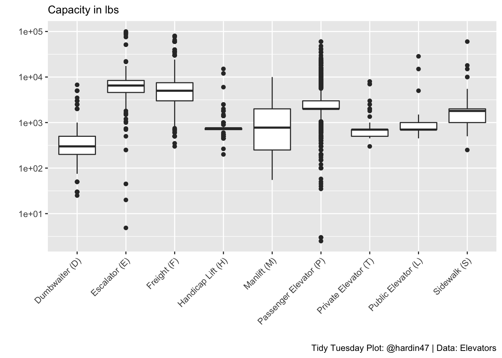
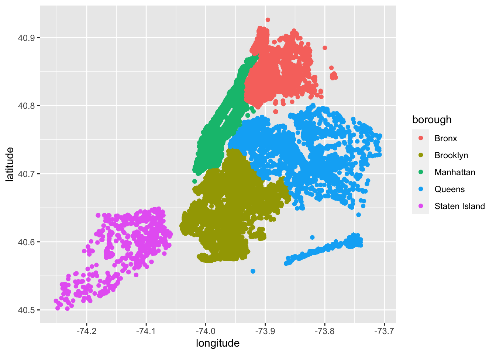

Elevators in NYC
The Data
The data this week comes from the Elevators data package.
This data package contains a data set of the registered elevator devices in New York City provided by the Department of Buildings in response to a September 2015 FOIL request.
The resulting Shiny App is at: https://hardin47.shinyapps.io/elevators/


Shiny App
Elevators in NYC
Elevators weight and location